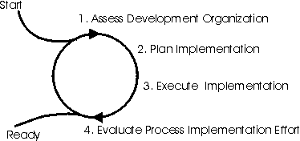
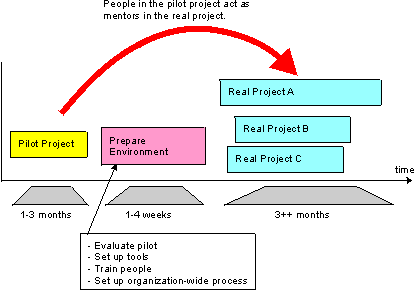
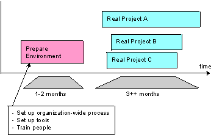
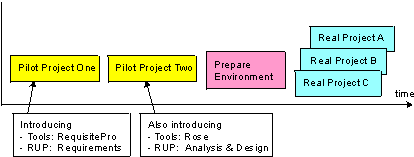
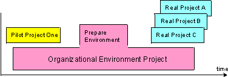
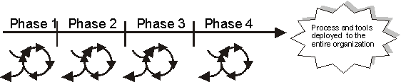

Concepts:
Implementing a Process in an Organization
Topics
This page explains what you do at the organizational level
to implement process and tools in a development organization.
Implementing process and tools at the project level in a
software-development project is described on the page called Concepts:
Implementing a Process in a Project.
Implementing a new process in a software-development organization can be
described in four steps.

The steps to implement process and tools in
an organization.
You must understand the current state of the software-development
organization in terms of its people, its process, and its supporting tools. You
need to identify problems and potential areas for improvement, as well as
collect information about outside issues, such as your competitors and market
trends. When this step is complete, you should know:
- The software development organization's current state.
- The kinds of people there, including their level of competence, skills,
and motivation.
- The tools currently used by the organization.
- The current software engineering process and how it's described.
- The organization's business goals.
Reasons for assessing the current state are to:
- Use it to create a plan for getting from the organization's current state
to your goal.
- Identify those areas that need to be improved first. You may not want to
introduce the entire process and all tools all at once. You may want to do
it in increments, starting with the areas that have the greatest need and
the best potential for improvement.
- Explain to the sponsors why you need to change process, tools, and people.
- Create motivation and a common understanding among those people in the
organization who are directly, or indirectly, affected.
Further Reading
The following pages describe how to assess one software
development project and its surrounding organization. Most of these can be
applied when you assess the software development organization.
Develop a plan for implementing the process and the tools in the
organization. This plan describes how to efficiently move from the
organization's current state to their vision. To develop this plan, you need to:
See the Guidelines for Planning the
Environment Implementation section for more information on what to consider
when you plan the implementation.
You need to set goals for the process, people, and tools—where is it you
want to be when the process implementation project is complete. You need to set
goals because:
- Goals serve as important input when planning the process implementation.
- Goals and the description of the organization's current state, achieved in
step 1, are used to motivate your sponsors, and to create understanding and
motivation among the people in the organization.
The result is a list of measurable goals, expressed so project members can
comprehend and internalize them. These goals serve as a vision for the
organization's future state.
Identify risks associated with implementing process and
tools. Listed below are several examples of risks:
-
"The pilot project involves many technical risks."
-
"There are too many new things for the people to
learn."
-
"It is not clear how tool A and tool B will work
together."
-
"It is not clear how to use tool A in a distributed
development organization."
Further Reading
The pages listed below describe risk management in a software
development project and they're valuable to note here as well:
Define a sequence of software development projects, or iterations. Decide
whether to run any pilot projects. See the page Concepts:
Pilot Project for more details on what a pilot project is and how to select
one. For each software development project, define the goals you want to reach,
what you want to achieve, what risks you want to reduce, and what parts of the
process and specifically which tools you want to implement. See the section
called Different Implementation Approaches.
Decide when you what to launch the process and tools to a wider
audience of software development projects. You may want to run one or two pilot
projects before you launch to the entire organization. See the section called Different
Implementation Approaches.
Decide how to facilitate the launch of process and tools. There
are a number of things you can do to facilitate software development projects in
implementing the process and tools, such as:
-
Developing ready-to-use templates and examples that all
projects can use.
-
Developing training programs.
-
Developing process implementation guidelines that provide
guidance to those people who will be responsible for implementing both the
process and tools.
-
Preparing mentors who will support the projects.
Plan training for the development organization. Study the
current competency levels among the organization's people. This is handled in Step
1: Assess Development Organization.
Next, look at the parts of the process you plan to implement,
and what tools will be introduced in each project. Identify those areas where
the organization's people need to raise their levels of competency and to what
extent this must be done.
Decide what training is needed for each project. A change
of process and tools affects the entire organization, therefore, we recommend
you train people outside of the projects to give them an understanding of what
the change means. This training may consist of an overview course, combined with
seminars to introduce the new process and tools.
Experience shows that having a mentor help with implementing a
process is a key success factor. Therefore, we recommend that each software
development project has a process mentor to help them start using the process.
It's impossible to give exact figures, but, as a general suggestion, we
recommend you plan for at least a 50% full-time equivalence during the first few
of iterations in the project until the project comes up to speed.
The projects also need help setting up the tools, so plan to
allocate resources for tool mentoring and tools support.
Decide whether you're going to develop an organization-wide
development environment that each software development project can use with the
necessary adaptations.
In most situations, we recommend you wait until several software
development projects have used the process and tools before you take this step.
At that point, it will be easier to identify those parts of the process and
tools that are reusable and those that will benefit from being owned, and
maintained, by a separate organization.
If you decide to develop an organization-wide environment, you
must initiate a project to develop the organization's development environment.
If you decide to initiate a project that develops the organization-wide
development environment, it must be made clear that this project team will work
very closely with the software development project teams. It must also be
understood that the team who develops the organization-wide development
environment is a service organization measured by the success of the
software development projects it supports.
Executing the environment implementation in an organization
means running software-development projects in which you implement the process
and tools. See Concepts: Implementing a Process in a
Project for more information. From a organizational point of view, this step
means that you:
-
Monitor the software-development projects.
-
Manage launches of the process and tools across
projects.
-
Monitor the development of and organization-wide
environment.
When you've implemented the process and tools in a real or pilot
software-development project, you need to evaluate the effort. Did you achieve
your established goals? Evaluate the people, the process, and the tools to
understand the areas to focus on during the next phase of the process
implementation effort.
When you implement a process and tools in an organization across individual
software development projects, there are document artifacts that might be
valuable to develop. This is, of course, in addition to the
Development-Organization Assessment and the Development Case for each project.
- First, you may need an Implementation Plan to describe the overall
plan for how to implement process and tools in an organization across
individual projects. This plan covers process, tools, and training,
and normally spans several software development projects.
- Secondly, you may need to develop Deployment Guidelines to help
individual projects implement process and tools. Deployment Guidelines
contain advice and guidance on how to plan the implementation of process and
tools in an individual software development project.
Different Implementation Approaches 
There are several approaches to implementing process and tools
in an organization. Several examples of different approaches are listed
below. They describe what you do for a development organization,
however, to understand what to do in a software development project, see Concept:
Implementing a Process in a Project.
The typical approach, illustrated in the figure below, means that you
implement the process and tools in a pilot project,
as an initial step.
After the pilot project, evaluate the use of process and tools, then prepare
the process and tools to be launched to a wider audience.
The typical approach is often the most effective way to introduce the process
and tools.

The typical approach to implementing
process and tools
The fast approach, illustrated in the following figure, uses the process and
tools directly in real projects without verifying that they work in a pilot
project. This approach introduces a greater risk of failure, but there can be
good reasons for taking those risks. For example, if the current process is very
similar to the Rational Unified Process (RUP) and if the tools are already used in the
organization, it may be relatively easy and low-risk to implement the new
process and tools.
Another time to use the fast approach is when the organization is suffering
from such severe problems that any change is perceived as an improvement. This
assumes that the potential for improvement is greater than the problems the
organization will inevitably encounter.

The fast approach
A more careful approach is to run more than one pilot project
before a real project starts using the new process and tools. Use the
careful approach when the risks are high and when there are many new factors.
You may want to use the process and tools on several projects before you launch
it to the entire organization.

The careful approach
Consider using the careful approach if one, or more, of the
following is true:
The distributed approach means you make the RUP available to the entire development organization. Each software
development project is then free to decide how to use the process. There is no
coordination or reuse between software-development projects.
The distributed approach can still give value to the
organization in these ways:
-
The projects get a common vocabulary.
-
People get used to the RUP as a common
process.
-
The distributed approach may be the first step towards
really making use of process and tools.
If the organization decides to develop and maintain a
development environment for the entire organization, this must be well planned.
There must be a team to develop and maintain this organization-wide environment
consisting of process, tools, and infrastructure. See Concepts:
Development Environment, specifically the section titled Organizational
Development Environment.
Planning an organizational environment project has to be
synchronized with the software development projects it supports. The goal of an
organizational environment project is to develop an environment that the
software development projects can use.

An organizational environment
project
We recommend you treat an organizational environment project as
you would any software development project. Follow the Project
Management discipline of the RUP.
Someone in the organization must be appointed with the overall
responsibility for implementing the process and tools for the entire
organization. This responsibility includes planning, managing, and budgeting
both the process and tools implementation.
Implementing a software development process in an organization is a complex
task and needs to be done in a controlled manner. We recommend treating it as a
project that is external to or is a sub-project of your software development
project. Set up milestones, allocate resources, and manage it as you would any
other project.
The process-implementation project is divided into a number of phases where
all four steps are performed in each phase until the project is ready and the
process and tools are deployed and successfully used by the entire organization
as shown in the following figure.

A process-implementation project can be divided into
phases.
The following table gives a general idea of how a project can be planned with
four phases.
|
Purpose |
Important results after the phase |
| Phase 1 |
To sell the process-implementation project to
the sponsors |
A go or no-go decision from the sponsors. To
support the decision, the tools may be demonstrated and a development case
may be exemplified. |
| Phase 2 |
To handle the major risks |
A demonstrable prototype of the
customer's software development environment is ready, including
tools, templates, guidelines, and examples of development cases. |
| Phase 3 |
To complete everything |
Completion of the customers
software development environment including integration, test, and
demonstration of its usage. All tools are ready to use. Templates,
guidelines, and examples of development cases are ready, a training
curriculum is ready, and mentors are ready to start supporting the real
projects through the next phase. |
| Phase 4 |
To deploy it to the entire organization |
Process and tools are deployed to the entire
organization. |
Four phases of a process-implementation project.
A project to implement process and tools in an organization has
many similarities to a software development project. It has even been suggested
that the phases above are named Inception, Elaboration, Construction, and
Transition as they are for a software development project using the RUP. However, we recommend that you do not use the same names on the
phases to avoid any misunderstandings.
Guidelines for Planning the Environment Implementation
When you define the content and goals of the milestones, keep the following
guidelines in mind:
- Keep the final vision in mind.
- Reduce major risks early.
- Focus on major problem areas early.
- Select those areas where you can make some easy gains early.
Some typical factors and how they can affect the plans are provided
below. Also see Guideline: Process
Discriminants.
- Problems in the current development process. Focus on those areas
of the development process where the organization has problems today. Focus
on areas where you can expect some easy results and where people can see the
benefits early. Make sure the first iterations focus on an area where you
know you will address and solve one of the major problems in today's
organization.
- The need for change in the current organization. If there
are lots of problems in the organization—with the tools or the way people
work—the frustration level in the organization will be high. In this case,
you can be more aggressive and employ the new process and tools, or parts of
them, in real projects.
- The capacity for change in the current organization. If they
are either unaccustomed to change or currently overwhelmed by it, the goals
of the first few iterations should be modest. In this case, the primary
objective should be to build credibility and confidence in the process, with
more intrusive changes reserved for later iterations when they can be more
easily accommodated. See Concepts: Managing
Organizational Change.
- The size of the organization. If the organization using the
process and tools is large, be sure that the development case and the tools
are stable enough to be used by many developers. In this case, be more
careful by implementing the process and supporting tools during several
iterations in one or more software development projects.
- The risks involved. If they are small, be more aggressive
and start using the process and tools in new projects earlier. If the risks
are large, be more careful and use pilot projects to verify the process and
the tools.
- The attitude among people in the organization. Communicate
the problems with today's organization and how it's working. If current
personnel understand today's problems, it will be easier to accept and
understand the need for change. Involve those people outside of the
immediately affected part of the organization.
Do not try to do everything all at once. Instead, divide the implementation
into a number of increments and, in each one, implement a portion of the new
process together with the supporting tools. Typically, focus on one of the areas
where you believe the change will have the most impact. If the
software-development organization is weak in testing, you may start by
introducing the Test discipline of the RUP together with
tools that automate testing. However, if the organization is weak in capturing
or managing requirements, start by introducing the Requirements discipline
together with its supporting tools.
Implement the process and tools in iterations of software development
projects whether in pilot projects or real projects. The purpose is to verify
the process and the tools in as real an environment as possible. Consider the
following points when you select software development projects and iterations:
- If the goal is to implement the process and tools in one single
software-development project, decide to implement the process and tools in
that one project, then monitor and improve the process as the project
continues.
- If the goal is to implement the process and tools in a large organization
over many projects, consider implementing and verifying the process and
tools in iterations over several phases. In that case, choose a relatively
small project where you can apply the process and tools during the whole
lifecycle of a software project.
- If the RUP represents a significant departure from
your current software engineering process, if you need to get a better
handle on the risks and advantages of introducing the new process or if you
are in a new organization with little or no process in place, consider
trying out your development case, or a simplified development case, on a
mini-project or a pilot project before applying it to your major,
mission-critical development project. See Concepts:
Pilot Project for more information.
Also, see the section titled Different Implementation
Approaches for examples.
The use of a new process, new tools, and possibly new technology in a
software project makes the project's schedule more volatile. Be sure to allocate
time and resources to implement the process, train people, and so on during the
iteration in the software-development project where you start using the process
and tools.
Top Reasons for Failure
It is important to understand these top reasons for failure:
-
Failure to incrementally implement process and tools.
-
Lack of management support.
-
Lack of bringing stakeholders onboard—all stakeholders
affected by the new process and tools must be onboard, including customers,
other department, and sub-contractors.
-
Lack of willingness or ability to deal with organizational
change.
These reasons focus on non-technical issues, which is exactly
what our experience shows.
Copyright
© 1987 - 2001 Rational Software Corporation
|  Disciplines >
Disciplines >
 Environment >
Environment >
 Concepts >
Concepts >